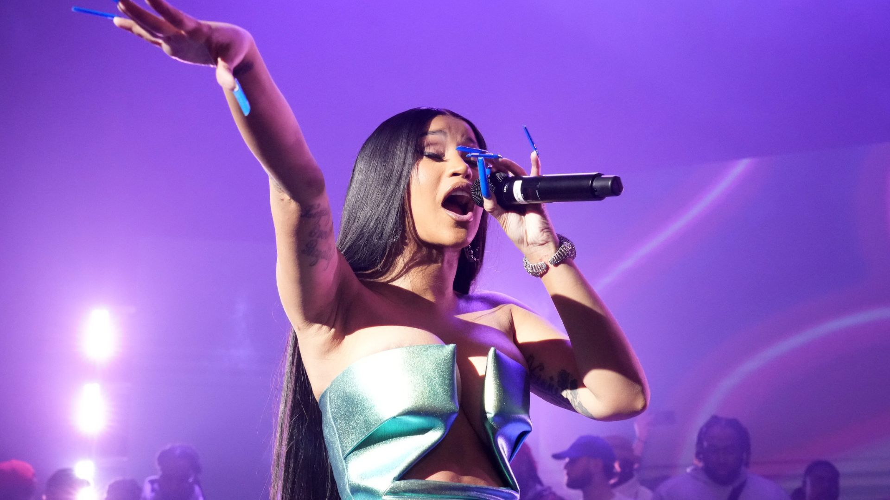
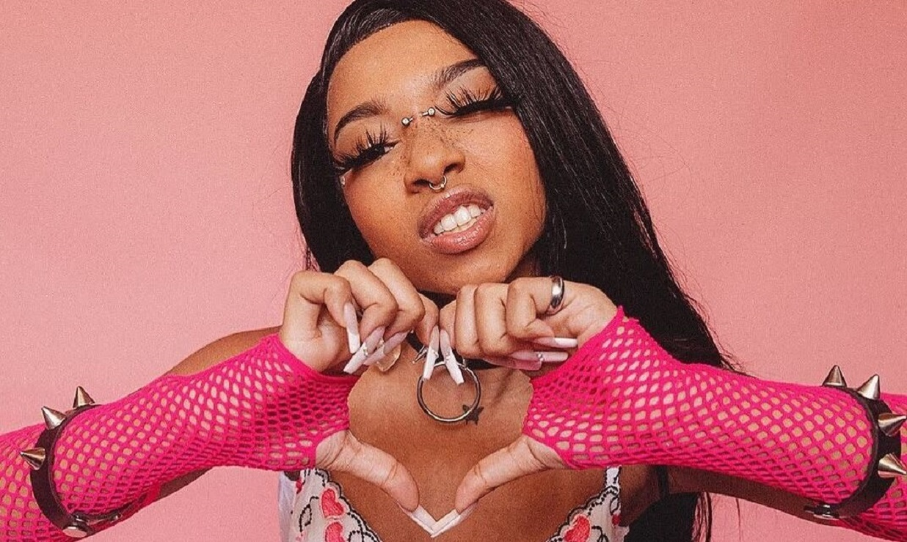
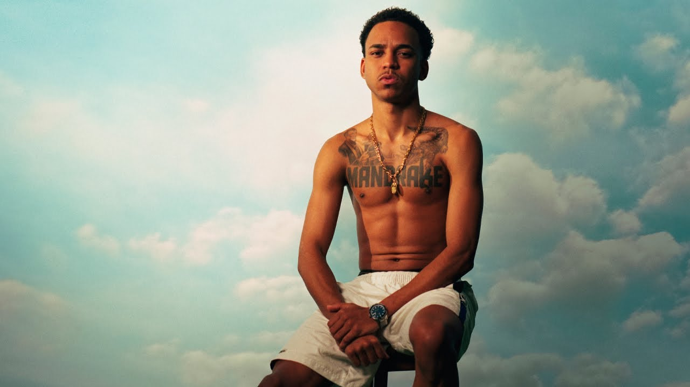
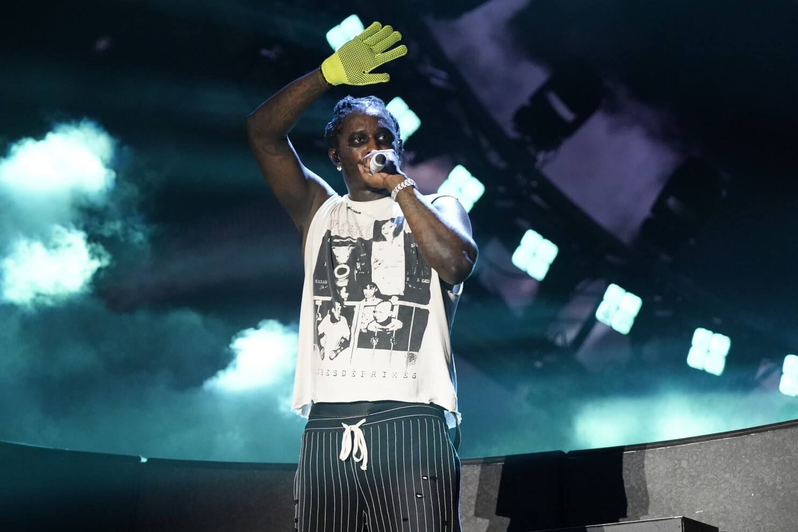
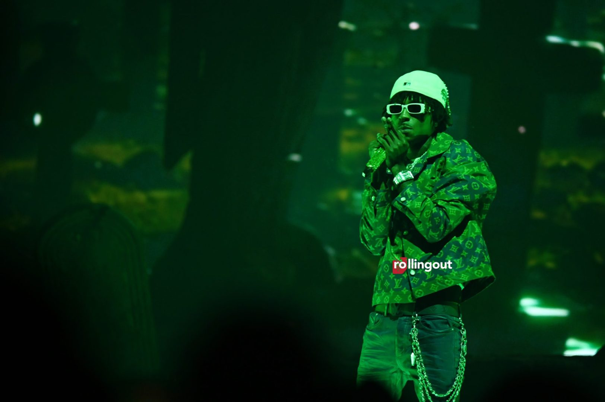
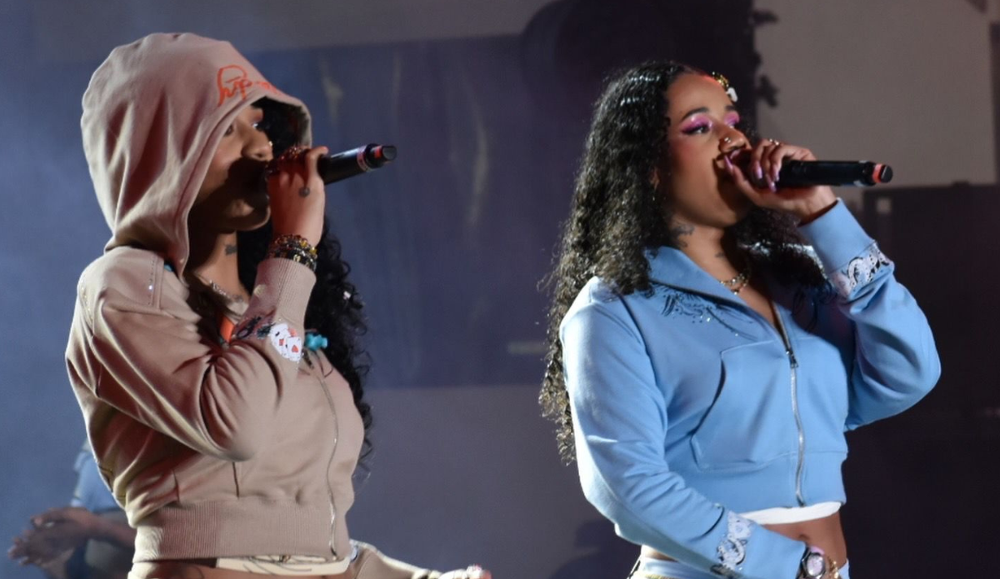
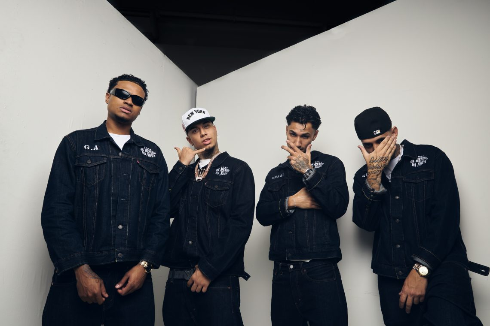
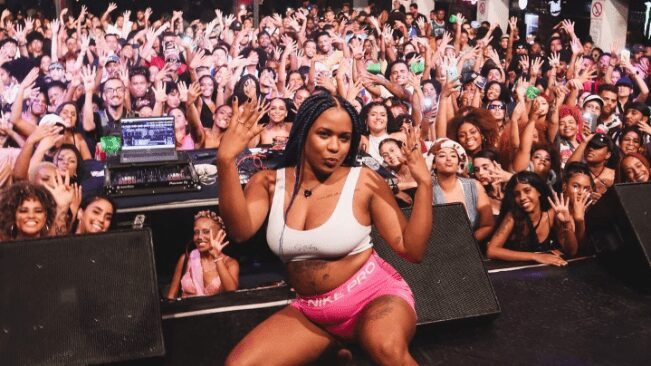

Depois de uma edição histórica que uniu o mundo em torno da cultura trap e da solidariedade, o Trap World Festival retorna em 2025 com um lineup que promete entrar para a história. Prepare-se para viver a experiência mais intensa, vibrante e poderosa da cena urbana: novos headliners chegaram para elevar o trap mundial a outro nível. Este ano, o festival traz uma mistura explosiva de lendas internacionais, ícones nacionais e novas potências da música. No comando das noites, nomes que dominam as paradas e redefinem o gênero a cada lançamento: Don Toliver, Veigh, Cardi B, Slipmami, Kyan, Young Thug, YoungBoy, Tasha & Tracie, Supernova, Mc Luana, Central Cee e a rainha Nicki Minaj. O Trap World Festival 2025 será o ponto de encontro dos maiores nomes da cena e das vozes que moldam o futuro da música. Um evento que une ritmos, culturas e propósitos — com a missão de continuar ajudando causas sociais e aproximando artistas e fãs de todo o planeta.
Don Toliver
Veigh
Cardi B

Slipmami

Kyan

Young Thug

YoungBoy

Tasha e Tracie

Supernova

Mc Luana

Central Cee
Nick Minaj